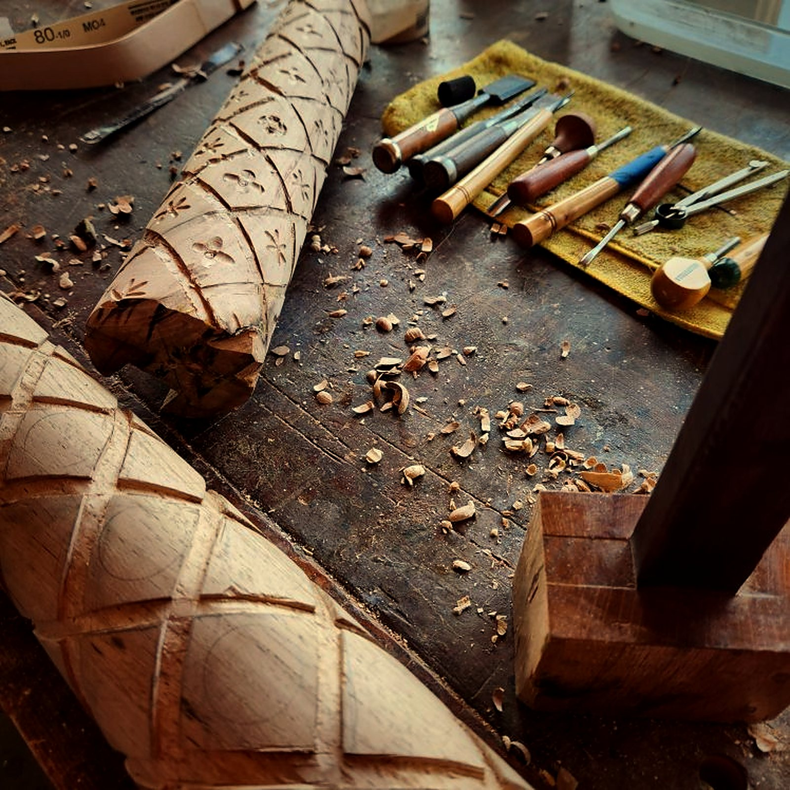

Chamberino, NM
Loose chairs, damaged tables, vintage finds, and furniture that didn't survive the last move. I repair, reinforce, and restore them in my Chamberino workshop, then match the color so the repair disappears into the piece.

Joints that have worked loose get taken apart, cleaned, reglued, and reinforced, so the chair doesn't just stop wobbling — it lasts longer than it did before.
Wobbly legs, loose joints, and broken parts, repaired with solid joinery rather than quick fixes.
Breaks and damage from moving day, repaired and color matched so the piece looks like itself again.
Older chairs and family pieces worth keeping, handled with care and repaired to stay in use.
Every piece is different. Tell me what's wrong and we'll talk through the repair before any work begins.
Call or email a few photos of the piece and what's wrong with it. The first conversation is free.
I can pick the piece up and bring it back to the workshop in Chamberino.
Joints are reglued and reinforced, damage is repaired, and the color is matched to the original finish.
When it's done, I bring it back and set it in place. All labor carries a one-year guarantee.
“Dadowoodworking was extremely professional and did an excellent job on repairing my 3 chairs. They not only repaired them being loose, but even reenforce[d] them so that they'll last longer.”Cameron McMullen · Verified Google review
“I only had a humble job for this master craftsman, to repair 4 different vintage chairs I had collected, but he was happy to service them and charged me an excellent price. … Highest possible recommendation!”Mary Wells · Verified Google review
“Doug has been great to work [with]. He gave us a schedule and showed up right on time. … He repaired each piece taking time to match the color perfectly.”Marcie Kapaldo · Verified Google review
Yes. I can pick up your piece, bring it back to the workshop for the repair, and deliver it to you when it's done. Tell me where you are when you call.
I've repaired, reinforced, and restored chairs, tables, and furniture damaged in moves, including vintage chairs. If you're not sure whether your piece can be saved, call and describe it.
That's the goal. I take the time to match color so the repair blends with the original finish.
Yes. I provide a one-year guarantee on all labor.
Call (575) 640-7463 or email dblutz@gmail.com with a few photos of the piece and what's wrong with it. The first conversation is free.
Looking for a new piece instead? See the gallery or start a commission.
Call or email a few photos. The first conversation is free.